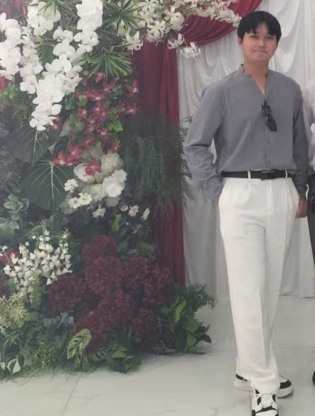

Lập trình & Web
Xây dựng giao diện Web responsive, lập trình hướng đối tượng và quản lý cấu trúc giải thuật.
XIN CHÀO, MÌNH LÀ
Sinh viên năm 2 Trường Đại học Bình Dương, tập trung nghiên cứu Phát triển Web, Cấu trúc dữ liệu & Cơ sở dữ liệu với GPA tích lũy 3.44/4.0 (8.13/10).

01 — VỀ MÌNH
Mình là sinh viên Công nghệ Thông tin có tư duy logic tốt và khả năng chủ động cập nhật công nghệ mới.
Thông qua các môn học cốt lõi như Lập trình hướng đối tượng (OOP), Cấu trúc dữ liệu & Giải thuật, cùng Thiết kế Web, mình rèn luyện phong cách viết code rõ ràng, có cấu trúc và tối ưu hiệu năng trải nghiệm người dùng.
02 — BỘ CÔNG CỤ
Các nhóm kiến thức chuyên môn mình đã được đào tạo bài bản tại Đại học Bình Dương.
Xây dựng giao diện Web responsive, lập trình hướng đối tượng và quản lý cấu trúc giải thuật.
Hiểu sâu về nguyên lý hoạt động phần cứng, quản trị cơ sở dữ liệu và hạ tầng mạng.
Phương pháp phân tích bài toán bằng xác suất thống kê, tư duy phản biện và làm việc nhóm.
03 — HÀNH TRÌNH
Chặng đường tích lũy kiến thức chuyên ngành Công nghệ Thông tin qua từng học kỳ.
Học kỳ 1 (Năm học 2026 - 2027)
Nghiên cứu Thiết kế Web, Cơ sở dữ liệu, Lập trình hướng đối tượng, Mạng máy tính và Xác suất thống kê toán.
Trường Đại học Bình Dương
Hoàn thành Cấu trúc dữ liệu & giải thuật, Hệ điều hành, Kiến trúc máy tính, Nhập môn lập trình và Toán cao cấp.
Nâng cao năng lực hội nhập
Hoàn thành Tiếng Anh 1-2-3, Tiếng Hoa 1, Kỹ năng tư duy phản biện và Thuyết trình.
04 — DỰ ÁN CHỌN LỌC
01 / UI DESIGN
Thiết kế trang chủ thương mại điện tử với bố cục thoáng, bảng màu tự nhiên và trải nghiệm xem sản phẩm trực quan.
MONDAY, 12 OCTOBER
02 / FRONT-END
Ứng dụng checklist tối giản giúp theo dõi công việc, đánh dấu hoàn thành và duy trì nhịp làm việc tích cực.
05 — KẾT NỐI
Bạn có một ý tưởng, cơ hội thực tập hoặc chỉ muốn trò chuyện về công nghệ? Mình rất vui được lắng nghe.